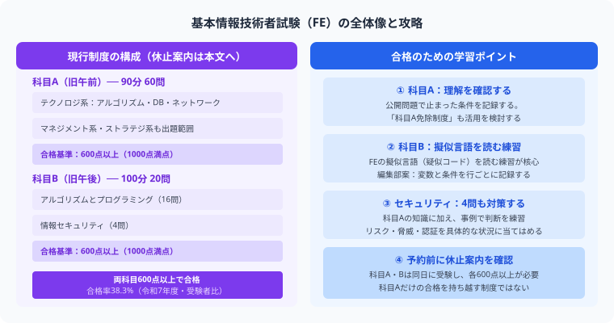
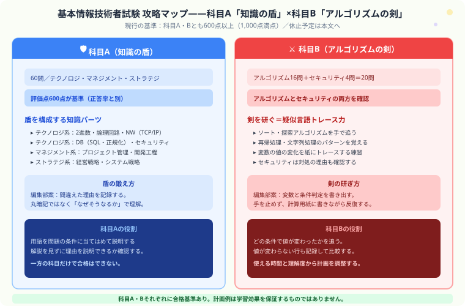

基本情報技術者の独学計画｜科目A・Bの出題と合格基準
こんにちは、若葉です！
私はITパスポート・基本情報技術者を学習中です。この記事は合格体験談ではありません。公式の試験条件と、編集部が提案する演習の進め方を分けて紹介します。
科目Aと科目Bは、それぞれ基準点を満たす必要があります。学習時間の配分は、公開問題で「用語の意味」「条件の読み取り」「処理の追跡」のどこに止まったかを記録して決めてください。
最初に、科目Aと科目Bのどちらに不安があるかを一つ選んでください。使える時間と、解き直しが必要な問題を照らし合わせて、今週の計画を作ります。
基本情報技術者試験（FE）はIPAが実施する国家試験で、ITエンジニアの登竜門と位置付けられています。このページでは、試験条件の確認に加え、自作の小さなトレース例題で「どの条件を読み違えたか」を確かめる手順を紹介します。

基本情報技術者試験はCBT方式で科目A（旧午前）と科目B（旧午後）の2科目構成です。それぞれ600点以上が合格基準となっています。
年末の休止と2027年度の予定を分けて確認する
IP・SG・FEは2026年12月28日以降、一時休止の予定です。会場により休止が早まることがあり、確認した公式案内では再開日は未公表です。「随時実施」でも休止中は受験できません。予約前に最新の休止・再開案内と会場の空きを確認してください。
出典：IPA「2026年5月以降の試験実施」変更後の表、2026年度FE・SG試験案内（2026年11月1日確認）。
2027年度の新制度案では、IP・SG・FEは春頃からCBT方式で通年実施する予定です。これは休止からの再開日が確定したという意味ではありません。「2027年」と「2027年度」を分け、具体的な開始日・申込日・最終的な出題範囲は今後の発表で確認します。
基本情報は新制度でも継続予定ですが、出題範囲体系などの変更案が公表されています。教材を選ぶ際は現行制度用か新制度対応かを確認してください。シラバス案を確定版として扱わないようにします。
出典：IPA「試験制度見直しの検討状況」、新制度のシラバス案（2026年11月1日確認）。
基本情報技術者試験の基本情報
| 項目 | 内容 |
|---|---|
| 試験方式 | CBT方式で随時実施（休止期間を除く。会場・申込条件を確認） |
| 合格率 | 38.3%（令和7年度） |
| 合格基準 | 科目A・科目B それぞれ600点以上（1,000点満点） |
| 学習計画 | 共通の必要時間は掲載しない。演習で止まった理由と使える時間から調整 |
| 試験科目 | 科目A（知識問題 60問）・科目B（アルゴリズム・セキュリティ 20問） |
出典：IPA「情報処理技術者試験（基本情報技術者試験）統計資料」（令和7年度、2026年10月31日確認）。受験者147,186人中、56,370人が合格（受験者ベースで38.3%）です。
現行制度（2026年度）の科目A・Bと合格基準

| 科目 | 問題数 | 内容 | 学習で確認すること |
|---|---|---|---|
| 科目A | 60問 | テクノロジ・マネジメント・ストラテジの知識問題 | 評価点600点以上が基準（正答率とは別） |
| 科目B（アルゴリズム） | 16問 | 疑似言語を使ったアルゴリズム・データ構造 | 条件と変数の変化を追えるか確認 |
| 科目B（セキュリティ） | 4問 | 情報セキュリティの実践的知識 | 状況に応じた対処の理由を確認 |
科目Aは90分・四肢択一60問、科目Bは100分・多肢選択20問です。科目A・Bは同日に受験します。通常の試験で科目Aだけ基準点を超えても、科目合格として次回へ持ち越せません。認定講座と修了試験による科目A免除は別制度です。
採点はIRTで、単純な正答率60%が評価点600点になるわけではありません。科目Aは60問中56問、科目Bは20問中19問で評価し、残りは今後の出題評価に使われます。16問・4問という出題数の比率を固定の配点比率とみなさないでください。
出典：IPA「試験要綱Ver.5.6」紙面12・15・17、IP・SG・FEパンフレット（2026年10月31日確認）。
独学スケジュール（3〜4ヶ月の計画例）
必要時間や期間は編集部の仮置き例で、合格者調査に基づく標準時間ではありません。公開問題を解いた理解度と、毎週使える時間から調整してください。
| 時期 | 内容 | 1日の目安 |
|---|---|---|
| 1〜4週間目 | 科目Aのテキスト通読（テクノロジ系から着手） | 1〜1.5時間 |
| 5〜8週間目 | 科目A過去問演習 + 科目Bのアルゴリズム入門 | 1.5時間 |
| 9〜12週間目 | 科目B（アルゴリズム）集中演習・疑似言語トレーニング | 2時間 |
| 13〜16週間目 | 総合演習・弱点補強・模擬試験 | 1.5〜2時間 |
科目別攻略ポイント
科目A：テクノロジ系
編集部の復習案は、用語だけでなく「どの条件で使うか」を説明することです。公開問題で止まった論点を、受験する制度に対応したシラバス・教材の見出しへ戻して確認します。過去問の正解を覚えただけで対策が十分とは判断しません。
科目A：マネジメント・ストラテジ系
現行制度ではマネジメント・ストラテジも科目Aの範囲です。ITパスポートで見た語でも、FEの問題の条件に当てはめて説明できるかを確認する、という進め方を提案します。
科目B：アルゴリズム・プログラミング
疑似言語の記法と問題の条件を確認し、処理後の変数の値を追う練習をします。下の例題は分岐と繰り返しだけに絞った説明用で、本試験の出題範囲全体や難度を再現するものではありません。
科目B：セキュリティ
知識の名称だけでなく、問題の状況に対してどの対処を選ぶかを確認します。編集部の復習案は、選んだ対処と、ほかの選択肢を除いた理由を一緒に記録することです。
自作例題：偶数だけを足す処理を追う
Study Quest編集部の自作例題です。公式の問題の転載ではありません。次の説明用疑似コードで、処理終了後のtotalはいくつになるでしょうか。iは1から4まで、両端を含めて増やします。
total ← 0
iを1から4まで1ずつ増やして繰り返す
iを2で割った余りが0なら
total ← total + i
totalを出力する答えと、途中の値を見る
| i | 余りは0？ | total |
|---|---|---|
| 1 | いいえ | 0 |
| 2 | はい | 2 |
| 3 | いいえ | 2 |
| 4 | はい | 6 |
答えは6です。10になったなら分岐を通さず全部足していないか、2になったなら最後のi＝4を飛ばしていないか確認します。結果だけを直さず、最初にずれた行を探してください。
条件を「余りが1なら」に変えると、足す値は1と3で、答えは4です。条件だけを変えたとき、どの行の判定が逆になるかも書き出してみてください。
自作のトレース記録シートを保存する（テキスト）。記録欄は「実行前の値／条件判定／実行後の値／最初にずれた行」です。アプリへのインポート用ファイルではありません。
代入と繰り返しの基本から確認したい場合は、変数トレースの詳しい記事へ進んでください。このページの例題は、そこへ条件判定を加えた入口の演習として使います。
教材を選ぶときの確認
まずIPAの基本情報技術者ページから公開問題・サンプル問題・シラバスへ進み、受験する制度と資料の対応を確認してください。市販教材は、対応する年度・制度、科目Bの記法、解説で途中の値を追えるかを確認します。未確認の教材名・優劣や使用体験を推薦の根拠にはしません。
出典：IPA「基本情報技術者試験」（2026年11月1日確認）。上の自作例題は、公式問題を解く前に処理の追い方を確認するための補助です。
受験生がよく引っかかる3つの落とし穴
- 科目Bのアルゴリズムを頭の中だけでトレースしようとする：途中で答えがずれた場合は、変数の値と条件判定を行ごとに書き、最初に異なった箇所を確認してください。
- 科目Aの知識問題を軽視して科目Bだけに時間を使う：一方だけでは通常の試験の合格基準を満たしません。科目Aも600点以上必要な独立した合格基準であることを忘れないでください。
- 特定のプログラミング言語の文法を勉強しようとする：科目Bで使われる「疑似言語」は試験独自の記法で、Python・Javaなど実際の言語とは異なります。実際の言語を知っている場合も、試験の疑似言語の規則を別に確認してください。
ITパスポートから基本情報への移行
ITパスポートの知識は科目Aの土台になりますが、範囲や深さが同一ではありません。科目Aの公開問題で不足を確認し、科目Bのアルゴリズム・プログラミングと情報セキュリティも学習します。ITパスポート合格による科目Aの自動免除はありません。
まとめ
- 科目A・Bそれぞれの合格基準を確認し、正答率とIRT評価点を区別する
- 共通の必要勉強時間を断定せず、演習で止まった理由から計画を調整する
- 自作例題では変数と条件判定を記録し、最初に答えがずれた行を探す
- 2026年末の休止予定と2027年度の制度案を分け、予約前に公式案内を確認する
- ITパスポート合格による科目Aの自動免除はない
アルゴリズムは「解けた瞬間が一番気持ちいい」頭脳ゲームです
最初は疑似言語の羅列にしか見えなくても、RPGデバッグ術で変数を1つずつ追えるようになると、パズルが解けていく感覚がどんどん楽しくなってきます。次の科目B問題では、変数の値を一行ずつノートに追ってください。正解を見る前に途中の値を書き出せれば、アルゴリズムは再現できる手順に変わります。